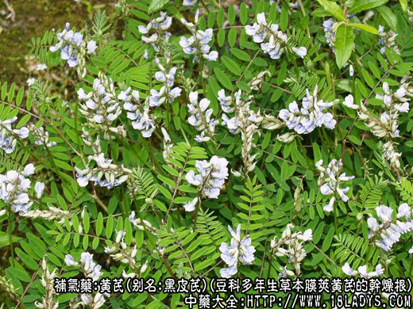
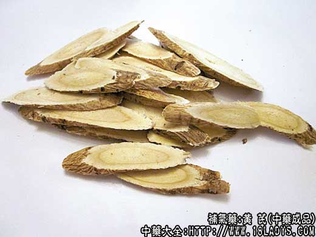

原文连接:https://www.daquan.com/post/2333.html



黄芪为常用中药。始载《神农本草经》，列为上品，原名黄耆。李时珍谓：“耆者长也，黄者色黄，为补者之长，故名。”
黄芪产地较多，商品形状亦异，按其原植物和产区的不同，一般分为黑皮芪，白皮芪，红芪三类。
1、黑皮芪
别名：卜奎芪、关卜奎芪、正口芪。
来源：为豆科多年生草本植物主要为膜荚黄芪，亦有内蒙黄芪的干燥根。野生或栽培。
产地：主产于黑龙江的齐齐哈尔、宁安、嫩江、鄂伦春旗，吉林的蛟河，延边自治州等地。
性状鉴别：根呈圆柱形，上端带芦头（根茎），下端稍细，有少数支根和须根，尾端多已折断。长30～90厘米，直径1～3厘米。粗条者上端多具空心。表面黑褐色，有明显的长纵皱有放射状花纹（习称菊花心）。气微香，味甜，嚼之渣少。
2、白皮芪
别名：绵黄芪、箭芪。
来源：为豆科多年生草本植物主要为内蒙黄芪，亦有膜荚黄芪的干燥根。多为栽培，亦有野生。
产地：主产于山西浑源、应县、繁峙、代县，内蒙古的武川、兴和、正蓝旗及锡盟地区，吉林的哲盟西部等地。山西多为栽培，内蒙古多为野生。
性状鉴别：浑源一带产者，根圆柱形，带芦头，长70～150厘米，有的可达2米，直径2～4厘米，根头部略膨大，多具空心，尾部渐细，带须根，部分为支根。表面土黄色，微有纵皱和麻点，皮较细，网纹不明显。断面亦显菊花心。质坚韧而重。气微，味甜而浊。有豆腥味，嚼之渣较多。
内蒙古产者，芦头小，头尾粗细匀称，长40～80厘米，直径0.6～2厘米。外皮灰褐色带网状纹理，支根和须根较少，菊花心明显。味甜，微有豆腥味。
3、红芪
来源：为豆科多年生草本植物多序岩黄芪的干燥根。多为野生。
产地：主产于甘肃岷县、宕昌、舟曲、临潭、德乌鲁市、漳县、西和、礼县、会川、武山等地。四川茂汶等地亦产。
性状鉴别：根呈圆柱形，长40～60厘米，直径1～3厘米。外皮红褐色，皮紧，皱纹紧密而深。质硬而韧，断面显菊花心，纤维性小而粉性大。气微，味甜，嚼之有渣。
果皮芪、白皮芪均以条粗长，菊花心鲜明，空洞小，破皮少者为佳。红芪以皮色红润，条均匀，坚实，粉性足者为佳。
主要成分：含生物硷、叶酸、结晶性中性物质、胆硷、氨基酸等。
药理作用：补气升阳、固表止汗、利水消肿、托毒排脓。其原理为：
1、强壮作用。即所谓“补气”。可能与其同行激素做哦那个和兴奋中枢神经系统作用有关。
2、利尿。作用较显著，用药后尿量增加64%，但有效剂量范围较小，剂量过小无利尿作用，剂量过大反而使尿量减少。
3、抗肾炎。对实验性肾炎有一定对抗作用，尤其在去尿蛋白方面有一定帮助。大白鼠口服大剂量黄芪粉对血清性肾炎的发病有阻抑作用，并能延迟蛋白尿与高胆固醇血症的发生。已有蛋白尿者，口服黄芪粉恢复比对照组快。又大量黄芪似能改善水肿和增强全身营养状态。
4、降压。动物实验证实有降血压作用，可能与扩张血管有关。
5、抗菌。体外试验对志贺氏痢疾杆菌、溶血性链球菌、肺炎双球菌、金黄色葡萄球菌等有抗菌作用。
此外，黄芪还有保护肝脏、防止肝糖元减少的作用。
炮制：切片，生用或蜜制。
性味：甘，微温。
归经：入肺，脾经。
功能：补气固表，利尿托疮。
主治：表虚自汗，脾虚泄泻，脱肛，中气下陷，消渴，痈疽久不收口等症。
临床应用：1、用于慢性衰弱者，尤其表现有中气虚弱的病人，取其有兴奋中枢神经系统作用。凡体倦乏力，语音低微、脉象濡缓的患者，可服黄芪，但需多服久服才能生效。
2、用于中气下陷所致的脱肛、子宫脱垂、内脏下垂、崩漏等病症，通过改善体质、加强全身肌张力而起作用，常要与党参、升麻、柴胡等配伍，方如补中益气汤。
3、用于治疗痹证。如周围神经麻痹、脑血管意外（中风）后遗的半身不遂，慢性风湿炎关节炎、肩关节周围炎等。上述病症由于气血虚弱、凝滞不通，故有疼痛或麻痹（成为血痹）。根据“气行则血行，治血先治气”的观点，应采用黄芪补气，如疼痛症状较明显（关节炎和肩周炎），配桂枝、姜黄、当归等加强镇痛作用，方如黄芪桂枝五物汤。如属瘫痪，则要配桃仁、红花、川芎、地龙等活血搜风药，方如补阳还五汤，方内的主药是黄芪。此方治中风后半身不遂，但用时需掌握适应指证：病人清醒、体温正常；对脑出血病人，必须确定出血已停止而脉柔弱者，才能使用，如出血未止或脉浮而有力者不宜用。又起病后三个月内使用效果较好，三个月后用效果较差。总的看来，黄芪治中枢性瘫痪的效果不及治外周性瘫痪。
4、用于表虚自汗证。黄芪可益气固表，为“固表主药”，常配白术、防风，方如玉屏风散，也可配牡蛎、浮小麦、麻黄根等。
5、用于治疗急性或慢性肾炎。黄芪可利尿消肿，又能减轻蛋白尿，改善全身营养状态。对急性肾炎、有恶风、关节痛、肢体浮肿、脉浮等“风水”证候者，可与防己、白术、甘草配伍，方如防己黄芪汤；对肢体浮肿，甚至出现腹水、脉浮，但不恶风，不渴等“皮水”证候，可与防己、桂枝、茯苓、甘草配伍，方如防己茯苓汤。由于黄芪能减轻蛋白尿，故如肾炎浮肿已消退，而蛋白尿仍阳性者，可与党参、糯稻根、熟地等配伍，或单味煎汤服亦可，临床初步观察对减轻蛋白尿有一定效果。对慢性肾炎，则常配其他补益药。
6、用于治疗“久败”痈疮。前人称黄芪为“疮家要药”，但实际上只适宜于“久败”之症。所谓“久败”：就是指由于阳气虚弱（抵抗力低），痈疮溃后久不愈和（要配党参、肉桂治疗），或长久不溃破者（要配银花、皂角刺、花粉等，方如内托黄芪散）。黄芪治疮，是取其托毒、排脓、生肌的作用，从现代医学观点看，黄芪在这方面的主要作用是抗菌和增强身体抵抗力，使疮痈易于溃破和愈和。但要注意，痈疮初起，炎症显著，毒势较剧，红肿热痛明显者，不宜用黄芪，否则会以热益热，使病情加剧。
7、用于治疗消渴（糖尿病）。常与淮山药、生地、天花粉、五味子等配伍。
使用注意：1、虽然动物实验发现黄芪能加强心脏收缩力，但临床较少用于心功能不全而有气喘的病者，因为曾经观察到这些病者用黄芪后往往气喘加重，这是否与黄芪的提气（兴奋中枢神经系统、刺激平滑肌收缩）作用有关，值得探讨。
2、虽然动物实验发现黄芪能降血压，但临床上少用于治高血压病人，因为曾经观察到由于黄芪的所谓“升提”作用，肝阳上亢（如高血压）及上部血热（如头面部有炎症、充血）者用后会致头痛、面红、牙痛等反应（由于头面部血管扩张引起），故高血压、头面部感染等患者应慎用。
3、消化不良、上腹胀满和有实证、阳证等情况的不宜用黄芪。
4、与人参、党参比较黄芪善补肌表之气，适宜表虚者用；人参（党参）善补五脏之气，适宜里虚者用。参、芪合用。补益力更全面而加强。
5、生黄芪用于退虚热，托疮疡；炙黄芪用于补气。
用量：一般9～15g，治肾炎和严重痹证要用大量，可用至30～90g。
处方举例：补中益气汤（《脾胃论》）：黄芪6g、炙甘草6g、党参12g、白术4.5g、当归3g、陈皮3g、升麻3g、柴胡3g，水煎服。
黄芪桂枝五物汤（《金匮要略》）：黄芪18g、白芍9g、桂枝6g、生姜9g、大枣4枚，水煎服。
补阳还五汤（《医林改错》）：生黄芪30～120g，当归尾9g，赤芍4.5g，地龙3g，川芎3g，桃仁3g，红花3g，水煎服。
内托黄芪散：黄芪9g、川芎6g、白术9g、银花9g、皂角刺6g、花粉6g、泽泻6g、甘草3g，水煎服。
注：1、蒙古人民共和国产之黄芪，称库伦芪或正芪。外皮土褐色，网纹明显，体轻而粉性大，气味香甜，习惯认为质优。
2、黄芪的同属植物，近年在西南、西北地区发现较多，据报道有黑毛果黄芪、金翼黄芪、多花黄芪、茂汶黄芪、云南黄芪、梭果黄芪等的根，在不同地区作黄芪药用。其性状与黄芪近似。
3、个别地区还有以豆科苜蓿属植物苜蓿或草木樨属植物草木樨等的根，误作黄芪使用的，他们的共同特征是柴性，切断面在显微镜下观察，维束管无结晶，而黄芪则有结晶。